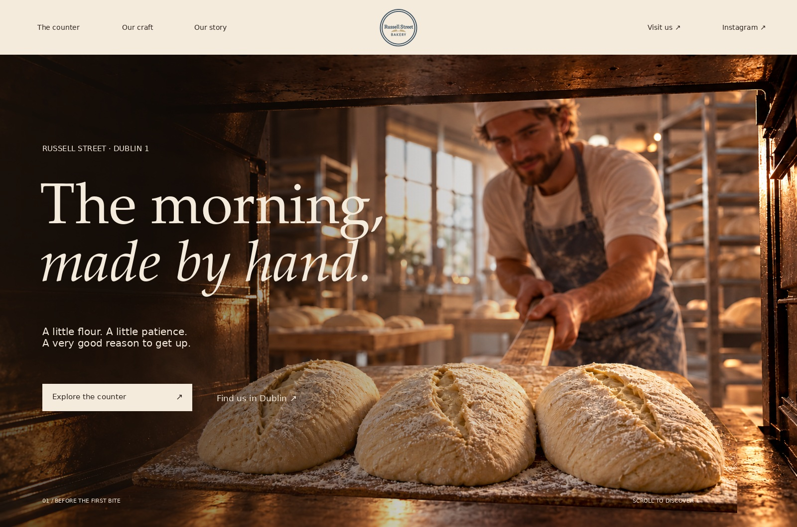
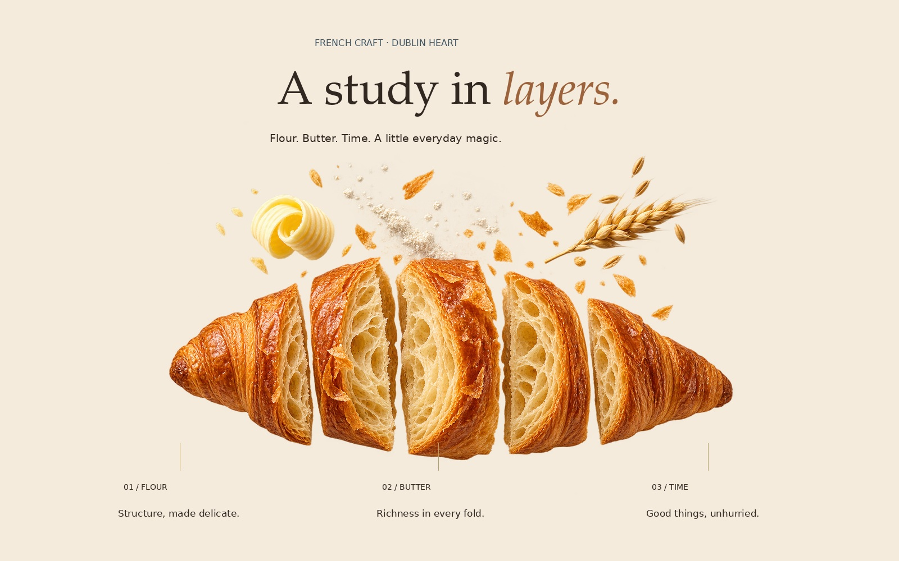
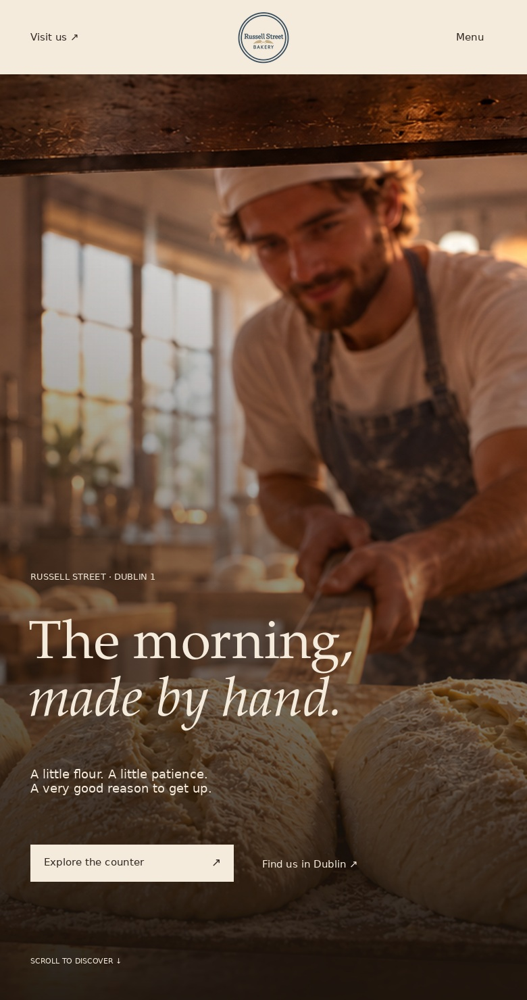
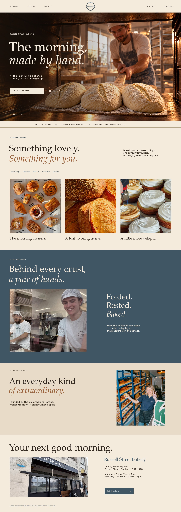
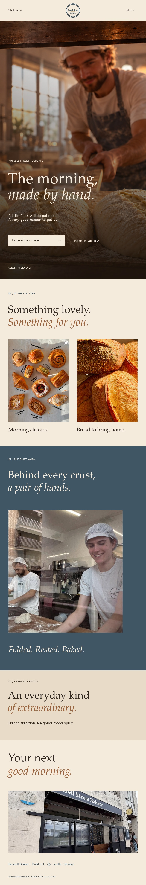
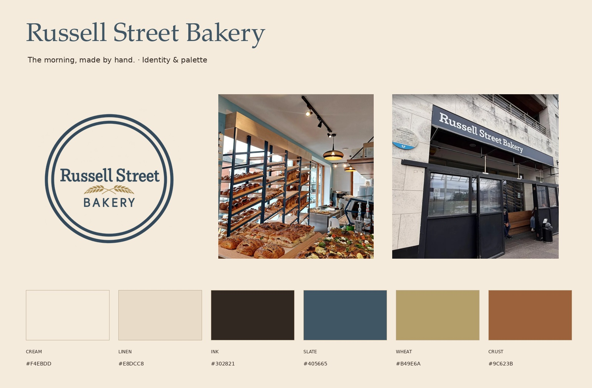
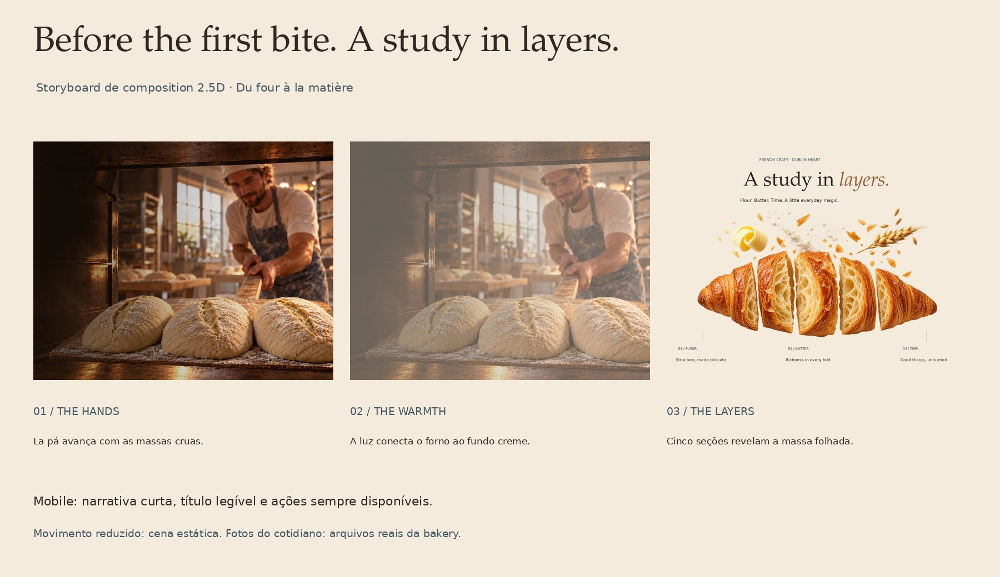
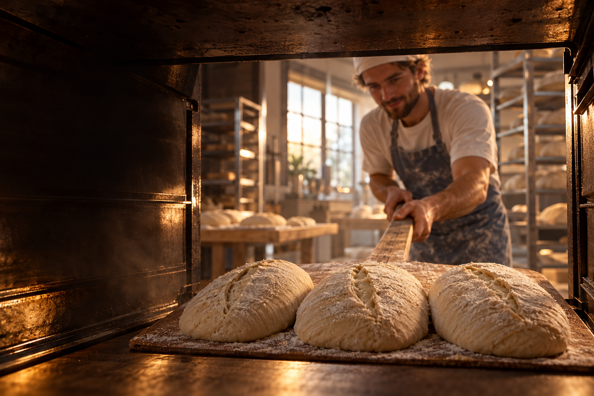

Hero · A study in layers
Abrir o arquivo ↗
Hero · Mobile
Abrir o arquivo ↗
Direção do site · Desktop
Abrir o arquivo ↗
Direção do site · Mobile
Abrir o arquivo ↗
Identidade e paleta
Abrir o arquivo ↗
Storyboard da animação
Abrir o arquivo ↗Logo PNG transparente
Abrir o arquivo ↗
Cena-mestre de campanha
Abrir o arquivo ↗
Fundo do forno
Abrir o arquivo ↗
Pá e massas · Camada alfa
Abrir o arquivo ↗